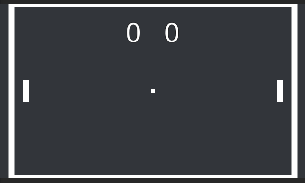
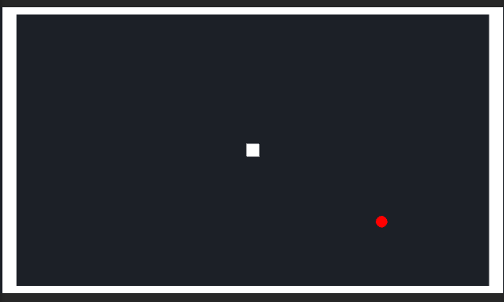
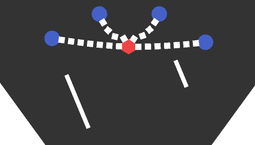
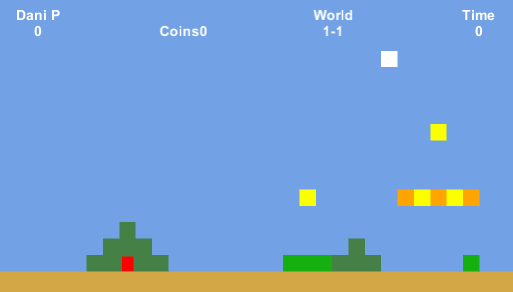
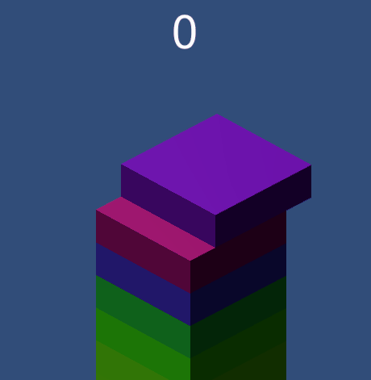
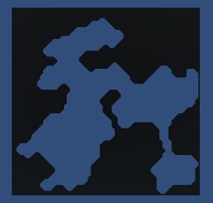
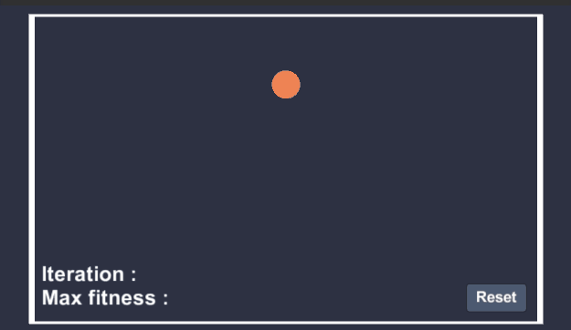

Sobre mí
Hola.
Mi nombre es Daniel Peña.
He estudiado Ingeniería Informática en la Universidad Politécnica de Madrid.
Desde siempre me ha llamado la atención como se crean los videojuegos, por lo que empecé
a estudiar de forma personal todo lo posible sobre este mundo.
En esta página podréis encontrar alguno de mis trabajos.
PONG
Pong es un videojuego clásico, y también uno de los primeros videojuegos que programé.
Elegí este juego para empezar debido a que es bastante sencillo,
pero aportaba distintos elementos como físicas, colisiones, UI , etc.

Snake
Mi segundo proyecto fue Snake.
Un videojuego también clásico, que me había llamado mucho la atención
cuando era pequeño, y quise realizarlo por mí mismo.

Physics
Para comprobar cómo funcionaban las físicas en Unity realicé
este pequeño ejemplo en el que jugaba con distintos
hinge joints, pesos, y físicas para aprender como usarlos en futuros proyectos.

Naves
Este fue uno de los primeros videojuegos que realicé.
A la hora de pensarlo me base en el famoso videojuego Invaders.
en este juego tienes que proteger tu planeta de los distintos enemigos que intentan llegar hasta tu planeta.

Mario
El siguiente paso fue realizar un videojuego de tipo plataformas 2D.
Para ello me base en el videojuego de SuperMario, aquí se puede ver el primer
nivel de este juego.

Stack
El siguiente videojuego es una copia de Stack un videojuego para móviles muy conocido.

Particles
Unas pequeñas pruebas para aprender el uso de las partículas

Procedural Dungeon Generation
Tras realizar distintas pruebas tanto en 3D como en 2D, descubrí el gran potencial
que tiene la generación procedimental.
Empecé a estudiar la forma de implementarla y termine desarrollando un generador de cuevas o mazmorras
totalmente aleatorias.
En el siguiente gif se muestran algunas de las formas que se pueden llegar a obtener.

Procedural Generation
En este caso se muestra un videojuego basado en el juego Spelunky.
Este videojuego utiliza generación procedimental para recrear cada uno de los niveles.
Cada nivel, se crea de forma aleatoria, basándose en ciertos principios, y cierto tipo
de estructuras, lo que hace que cada vez que una partida en este juego , se reproduzca un mapa
totalmente distinto al anterior.

Algoritmo Genético
En este ejemplo se muestra el funcionamiento de un algoritmo genético.
Se puede comprobar cómo los distintos individuos parten de un comportamiento totalmente aleatorio,
y tras las distintas iteraciones, se van heredando los mejores comportamientos.
En este caso el objetivo principal es llegar al punto naranja, por lo que los individuos
que mas cerca se quedan tienen más probabilidad de dar su información a las siguientes generaciones.
Al final vemos como casi todos los individuos consiguen llegar al objetivo en pocas iteraciones.
Como también se puede comprobar hay individuos que no heredan un comportamiento correcto,
esto es debido a las distintas mutaciones que se incorporan en el propio algoritmo.

Algoritmo Genético + Red Neuronal
En este ejemplo se muestra el proceso de aprendizaje que tiene una red neuronal
al mezclarse con un algoritmo genético.
En este caso los individuos tienen el objetivo de llegar hasta el punto más alto evitando
los distintos obstáculos que se va encontrando.
Cada uno de los individuos tiene una serie de inputs, basado en los distintos sensores que tienen.
Estos inputs son tratados por la red neuronal para obtener un output que será la dirección
que tiene que tomar.
Como se puede comprobar se van viendo como en cada iteración los individuos van aprendiendo
cómo deben de tratar los diferentes inputs, para poder llegar cada vez más lejos.
Del mismo modo los individuos que llegan más lejos pasan su información a las siguientes
generaciones. Por lo tanto podemos ver como cada vez son más los individuos que llegan más lejos.

Proyecto3D
En este ejemplo se muestra una parte del último proyecto en el que estoy trabajando
Una pequeña aventura en 3D en la que la protagonista tiene que ir completando ciertas misiones.